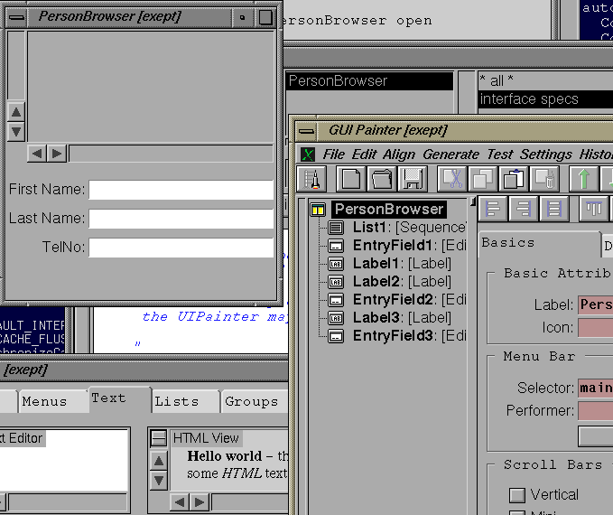

Sorry - this document is unfinished.
In order to make the code simple and easy to understand, we will only create a very simple and easy to understand application: a little person browser application.
The resulting application should be able to read Person objects from a file, add new Persons to that database and finally save the persons back onto the file.
In Smalltalk/X, a framework exists for typicaly applications, which
consists of the ApplicationModel, UIBuilder and ValueModel class hierarchies.
In order to make use of this framework, we create our application class
as a subclass of ApplicationModel.
In the browser, select the 'New Application' item from the
class-list-menu,
and accept the resulting class definition template:
ApplicationModel subclass:#PersonBrowser
instanceVariableNames: ''
classVariableNames: ''
poolDictionaries: ''
category: 'Applications'
After that, you can already start your new application, either by
evaluating:
PersonBrowser open
PersonBrowser
class in the browser.
Of course, there is not more than an empty application window - for now.
mainMenu selector.
You may want to validate and reopen your application by double clicking on the class again.
windowSpec
method (double click on the selector), and drag a selectionInListView
(from the galleries lists-section) and a few labels plus inputFields (from the galleries
'text'-section) into the drawing canvas.
Now, your applications canvas should look like: 
Text to be continued ...

Copyright © Claus Gittinger Development & Consulting
Copyright © eXept Software AG
<cg@exept.de>